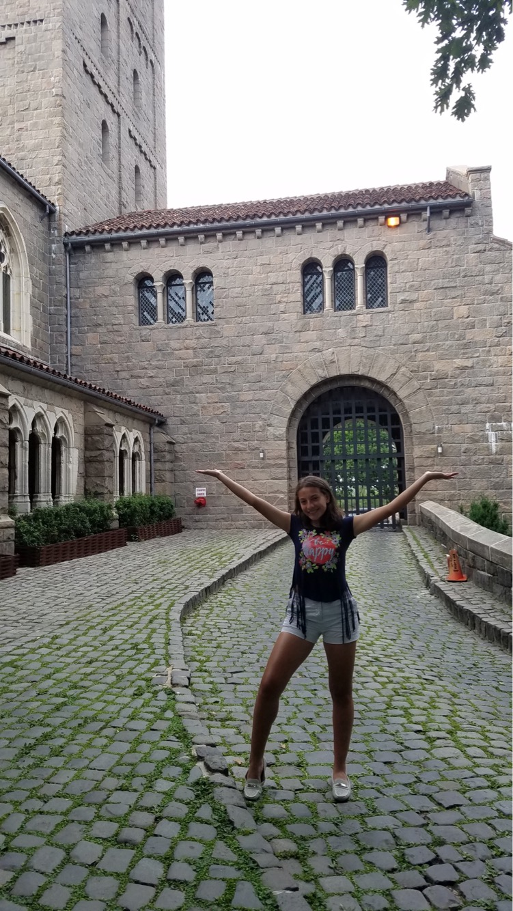
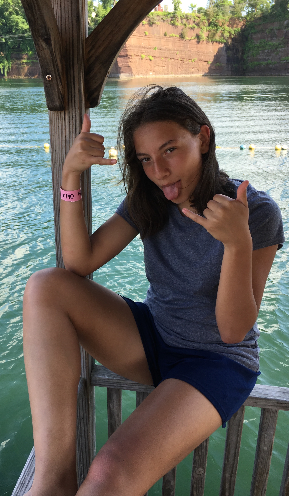
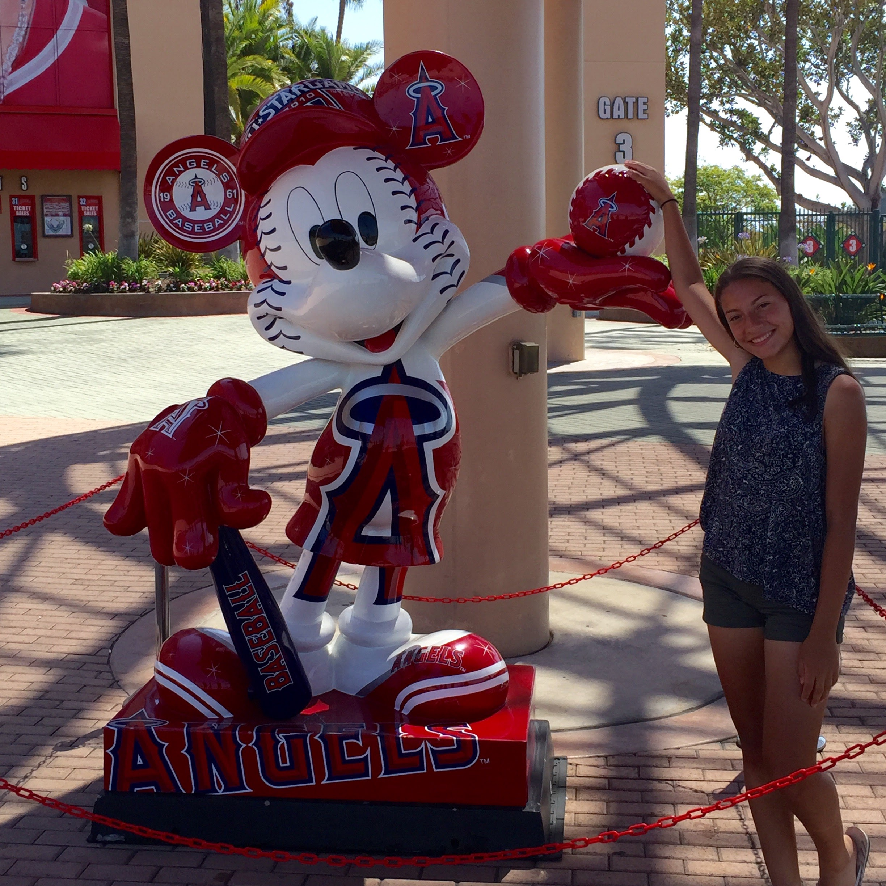
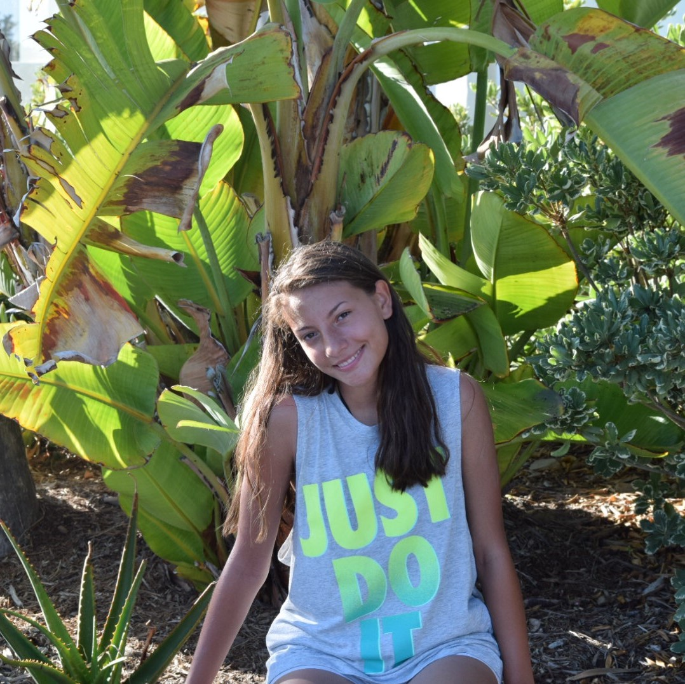
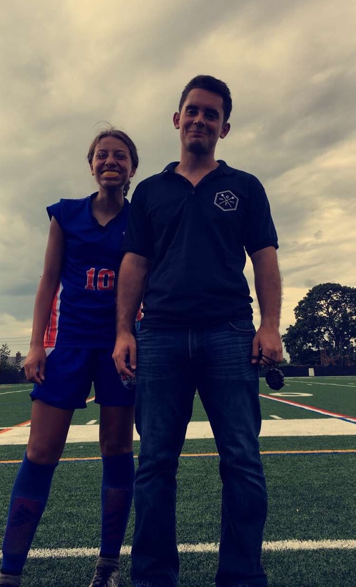
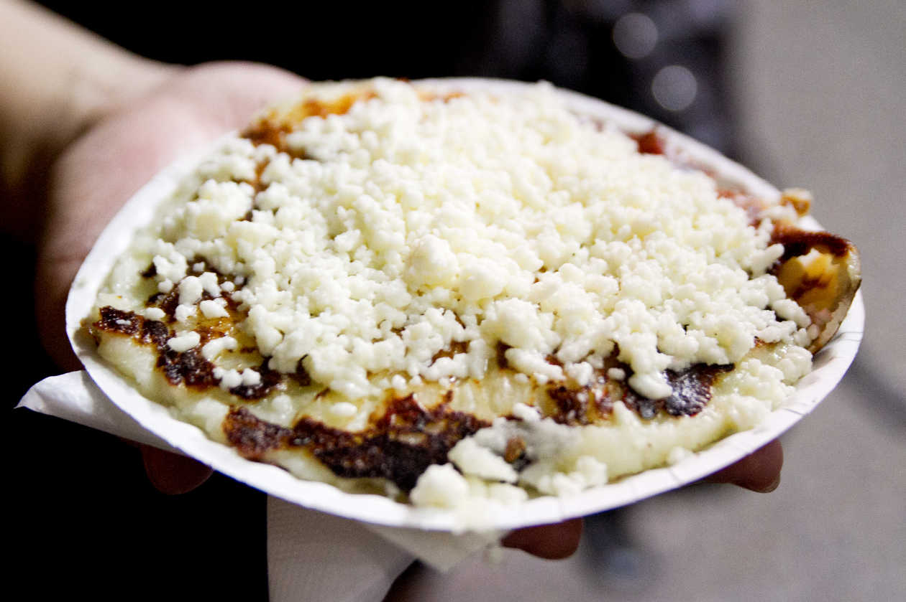
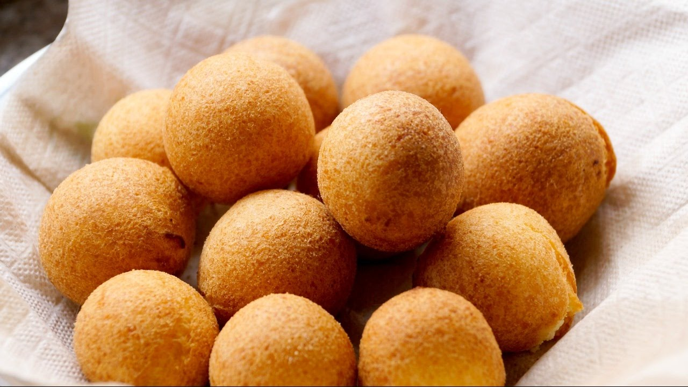
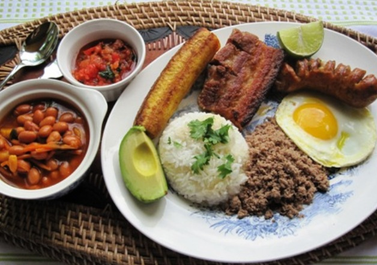
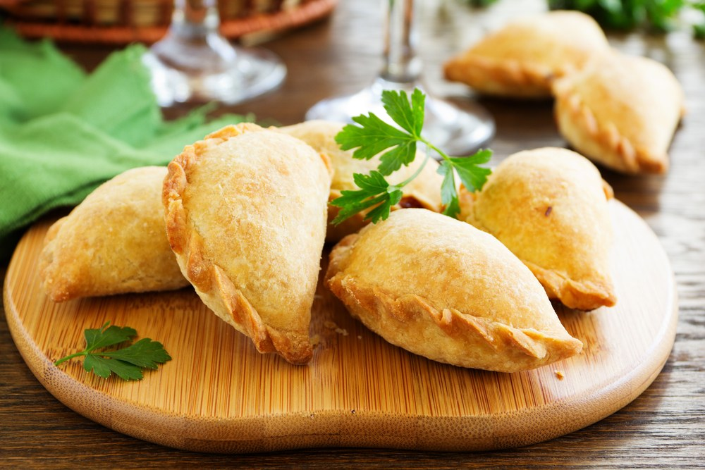

upstate. There is a lot to who I am. I am Colombian. I am a feminist. I am a dog owner. I am an athlete. I am a future coder. I am a foodie. I can not be me unless I am all of those things. In many ways, I see myself as an extremely versatile human.
Conventional is not for me. I like things that are uniquely Lina. I like being different.
I have been playing soccer for about 8 YEARS . I began playing soccer on Yonkers DPY Liverpool as the only girl in our whole Westchester League. After playing on that team for about 4 years, I decided to search for better opportunities with Westchester Soccer Club and began to play in the Premier League. Now, I currently am playing for NY Surf Soccer, an affiliate of the world-renowned Surf Soccer Club in San Diego, California. PLaying soccer has allowed me to travel across the country, make new memories, and connect with many colleges. I plan to pursue college soccer in the future.



I have a dog named Austin who is 3 years old. He is a mix between a german shepherd and a golden retriver. I adopted him for a rescue organization. When I adopted him, I realized he was really shy. He peed on me on the ride to his new home - our home. I was super excited nonetheless, and how could I be angry at my new, cute, fluffy best friend? Although he can't speak, I am aware of the hardships he encountered prior to being rescued. He does not like strangers at all and is extremely defensive of his "people" - which is terrible when I have friends come over.


FOOD.
I love food SO much. I am not a picky eater at all, and I believe that my open-mindedness allows me to try new foods whenever I go out. I think that food is a fascinating part of differeing cultures. Although food does not account for all that is a culture, learning where certain dishes come from and what they may mean is a good introduction towards eliminating ignorance. My love for food began as a young child in the streets of Colombia. I fell in love with empanadas, arepas, bandeja paisa's, bunuelos, and just about everything.
   
As a girl, I know that my life experiences are extremely varied in comparison to my brothers. I am treated differenty by my teachers, parents, and coaches. Although my younger brother Joshua is 3 years younger than I am, the idea of him dating is celebrated, whereas it is prohibited with me. As a soccer player, I have often been told that because I am a girl, I can not be a good soccer player. Whenever I enter a park to play, I hear boys say Take it easy, she's a girl .
Oh, are they wrong. As a daugther, there is extreme pressure to be perfect
. I think it is extremely important for the stigma agaisnt feminism to be destroyed. Feminism does not advocate women to be superior to another group of people or gender. According to Google, feminism is the advocacy of women's rights on the basis of the equality of the sexes
. It will be years until people truly realize the necessity of feminism. Issues such as the gender pay gap and the perpetuation of males as opposed to females in STEM are problems which continue to plague the progress of this nation.